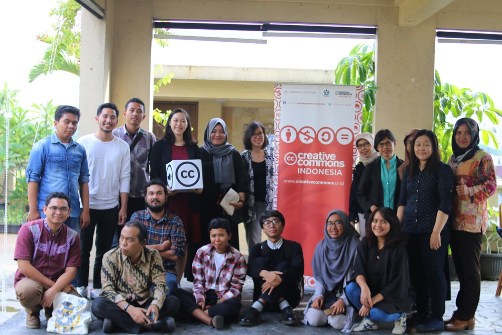

Creative Commons Indonesia 28 May 2019
Creative Commons Indonesia 28 May 2019

Apa yang kita lakukan
Creative Commons Indonesia advocates for the free and open sharing of knowledge and creativity.
Tentang kamiLisensi Creative Commons
Creative Commons licenses empower the sharing of works with standardised copyright permissions and attribution.
Belajarlah lagiKajian
Resources to learn about copyright, licensing, and making use of only licensed works.
Mulai belajarBerita & Acara
-
 Acara
Acara
Perwakilan Creative Commons Indonesia sebagai Peninjau dalam Agenda WIPO mengenai Pembatasan dan Pengecualian Hak Cipta untuk Perpustakaan, Arsip, Museum, dan Aktivitas Pendidikan dan Riset di Singapura
Pembatasan dan pengecualian (P&P) hak cipta untuk perpustakaan, arsip, museum, dan aktivitas pendidikan dan riset telah menjadi agenda World Intellectual...
-
 Acara
Acara
Lokakarya Hak Cipta dan Lisensi Creative Commons untuk Jurnal Ilmiah di Universitas Muhammadiyah Sumatera Utara
Senin, tanggal 29 April 2019, Creative Commons Indonesia (CCID) dan Lembaga Penelitian dan Pengabdian kepada Masyarakat (LP2M) Universitas Muhammadiyah Sumatera...
-
 Acara
Acara
Dokumentasi Kenali Hakmu Bagikan Karyamu
Pada tanggal 10 April 2019 lalu Creative Commons Indonesia (CC Indonesia) dan Badan Ekonomi Kreatif Republik Indonesia (BEKRAF RI) menyelenggarakan...
-
 Acara
Acara
Sosialisasi Lisensi Creative Commons di Wikinusantara
Foto oleh Fitriayu/CC BY Pada hari Sabtu (27/4/2018) lalu, CCID diwakili Hilman Fathoni memberikan paparan dasar tentang lisensi Creative Commons...
-
 Acara
Creative Commons Indonesia Kembali Dikukuhkan Sebagai Perwakilan Resmi CC di Indonesia
Foto oleh Susi Harja Hunusalela Pada tanggal 26 Januari 2019 lalu, Proyek Creative Commons Indonesia menyelenggarakan diskusi terbuka sebagai upaya...
-
 Acara
Acara
Sosialisasi Lisensi Creative Commons Untuk Komunitas SLiMS
Foto oleh SLiMS Jakarta Pada hari Sabtu (3/3/2018) lalu, CCID diwakili Hilman Fathoni memberikan paparan dasar tentang lisensi Creative Commons...
-
 Acara
Acara
Diskusi Terbuka Creative Commons Indonesia
Pendahuluan Creative Commons (CC) adalah organisasi nirlaba yang berpusat di Mountain View, Canada, dengan jaringan afiliasi yang tersebar di berbagai...
-
 Berita
Berita
Lokakarya Hak Cipta dan Lisensi Creative Commons di Pekanbaru
Minggu (13/01/2019), Creative Commons Indonesia (CCID) bekerja sama dengan komunitas literasi Hidden Gems dan Balai Pustaka Universitas Riau dalam penyelengaraan...